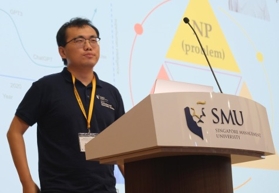

|  |
Xinrun WangResearch Assistant Professor (RAP) School of Computer Science and Engineering (SCSE) Nanyang Technological University (NTU), Singapore [Email] [GitHub] [Google Scholar] [Curriculum Vitae] |
Nanyang Technological University (NTU), Singapore
Ph.D, School of Computer Science and Engineering
Supervisor: Prof. Bo An
Dalian University of Technology, China
Bachelor of Science, School of Physics and Optoelectronic Technology
March, 2023: We release our reinforcement learning for FinTech platform TradeMaster
PRUDEX-Compass: Towards systematic evaluation of reinforcement learning in financial markets
Shuo Sun, Molei Qin, Xinrun Wang†, and Bo An†
Transactions on Machine Learning Research (TMLR), 2023
Enhancing meta learning via multi-objective soft improvement functions
Runsheng Yu, Weiyu Chen, Xinrun Wang, and James Kwok
The 11th International Conference on Learning Representations (ICLR), 2023
Population-size-aware policy optimization for mean-field games
Pengdeng Li, Xinrun Wang†, Shuxin Li, Hau Chan, and Bo An
The 11th International Conference on Learning Representations (ICLR), 2023
Solving large-scale pursuit-evasion games using pre-trained strategies
Shuxin Li, Xinrun Wang†, Youzhi Zhang†, Wanqi Xue, Jakub Cerny, and Bo An
Proceedings of the 37th AAAI Conference on Artificial Intelligence (AAAI), 2023
DO-GAN: A double oracle framework for generative adversarial networks
Aye Phyu Phyu Aung*, Xinrun Wang*†, Runsheng Yu*, Bo An†, Senthilnath Jayavelu, and Xiaoli Li†
Proceedings of the 2022 IEEE Conference on Computer Vision and Pattern Recognition (CVPR), 2022
RMIX: Learning risk-sensitive policies for cooperative reinforcement learning agents
Wei Qiu, Xinrun Wang, Runsheng Yu, Rundong Wang, Xu He, Bo An, Svetlana Obraztsova, and Zinovi Rabinovich
Proceedings of the 35th Annual Conference on Neural Information Processing Systems (NeurIPS), 2021
Neural regret matching for distributed constraint optimization problems
Yanchen Deng, Runsheng Yu, Xinrun Wang, and Bo An
Proceedings of the 30th International Joint Conference on Artificial Intelligence (IJCAI), 2021
CFR-MIX: Solving imperfect information extensive-form games with combinatorial action space
Shuxin Li, Youzhi Zhang*, Xinrun Wang*, Wanqi Xue, and Bo An
Proceedings of the 30th International Joint Conference on Artificial Intelligence (IJCAI), 2021
We mind your well-being: Preventing depression in uncertain social networks by sequential interventions
Aye Phyu Phyu Aung, Xinrun Wang, Bo An, and Xiaoli Li
Proceedings of the 30th International Conference on Automated Planning and Scheduling (ICAPS), 2020
Learning expensive coordination: An event-based deep RL approach
Zhenyu Shi*, Runsheng Yu*, Xinrun Wang*, Rundong Wang, Youzhi Zhang, Hanjiang Lai, and Bo An
Proceedings of the 2020 International Conference on Learning Representations (ICLR), 2020
When players affect target values: Modeling and solving dynamic partially observable security games
Xinrun Wang, Milind Tambe, Branislav Bosansky, and Bo An
Proceedings of the 10th Conference on Decision and Game Theory for Security (GameSec), 2019
Outstanding Student Paper Award
Who should pay the cost: A game-theoretic model for government subsidized investments to improve national cybersecurity
Xinrun Wang, Bo An, and Hau Chan
Proceedings of the 28th International Joint Conference on Artificial Intelligence (IJCAI), 2019
Catching Captain Jack: Efficient time and space dependent patrols to combat oil-siphoning in international waters
Xinrun Wang, Bo An, Martin Strobel, and Fookwai Kong
Proceedings of the 32nd AAAI Conference on Artificial Intelligence (AAAI), 2018
Stop nuclear smuggling through efficient container inspection
Xinrun Wang, Qingyu Guo, and Bo An
Proceedings of the 16th International Joint Conference on Autonomous Agents and Multi-Agent Systems (AAMAS), 2017